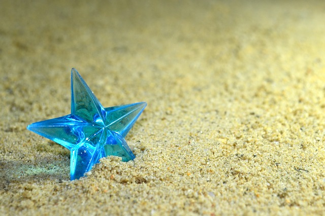

Portfolio

Referência - Tony Jin
Education
- B.Sc. in Law, 2013
Federal University of Pernambuco, Recife, Brazil
Graduation project: ...
- M.Sc. Candidate in Computer Science, February 2008
Federal University of Pernambuco, Recife, Brazil
Thesis topic: From social to collaboration: a collaborative system to support research groups
- B.Sc. in Computer Science, September 2005
Federal University of Pernambuco, Recife, Brazil
Graduation project: Interactive Design in Agile Software Development Processes